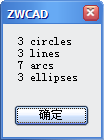

(vlax-map-collection obj function)
Applies a function to all objects in a VLA collection object.
If obj argument doesn't represent a VLA collection object, or each object in the VLA collection object doesn't match the function, vlax-map-collection function would report "error: *error*", otherwise applies the function to all objects in the VLA collection object and returns the value of obj argument.
The function accepts two arguments:
| Argument | Meaning |
|---|---|
| obj | A VLA collection object. |
| function | A function name or lambda expression. |
Examples
| Code | Result |
|---|---|
(vl-load-com)
(defun c:test (/ curdoc PaperSpace Nums_circle Nums_line Nums_arc
Nums_ellipse)
(setq Nums_circle
0
Nums_line 0
Nums_arc 0
Nums_ellipse
0
)
(setq
curdoc (vlax-get-property (vlax-get-zwcad-object) 'ActiveDocument)
)
(setq PaperSpace (vlax-get-property curdoc 'ModelSpace))
(vlax-map-collection PaperSpace 'statistics)
(alert (strcat (itoa Nums_circle)
" circles"
"\n"
(itoa Nums_line)
" lines"
"\n"
(itoa Nums_arc)
" arcs"
"\n"
(itoa Nums_ellipse)
" ellipses"
)
)
(princ)
)
(defun statistics (ent / objType)
(setq objType (cdr (assoc 0 (entget (vlax-vla-object->ename ent)))))
(cond
((= objType "CIRCLE")
(setq Nums_circle (1+ Nums_circle))
)
((= objType "LINE")
(setq Nums_line (1+ Nums_line))
)
((= objType "ARC")
(setq Nums_arc (1+ Nums_arc))
)
((= objType "ELLIPSE")
(setq Nums_ellipse (1+ Nums_ellipse))
)
)
)
|
 The custom command "Test" is invoked to statistics the number of circle, line, arc and ellipse in current drawing's ModelSpace. |